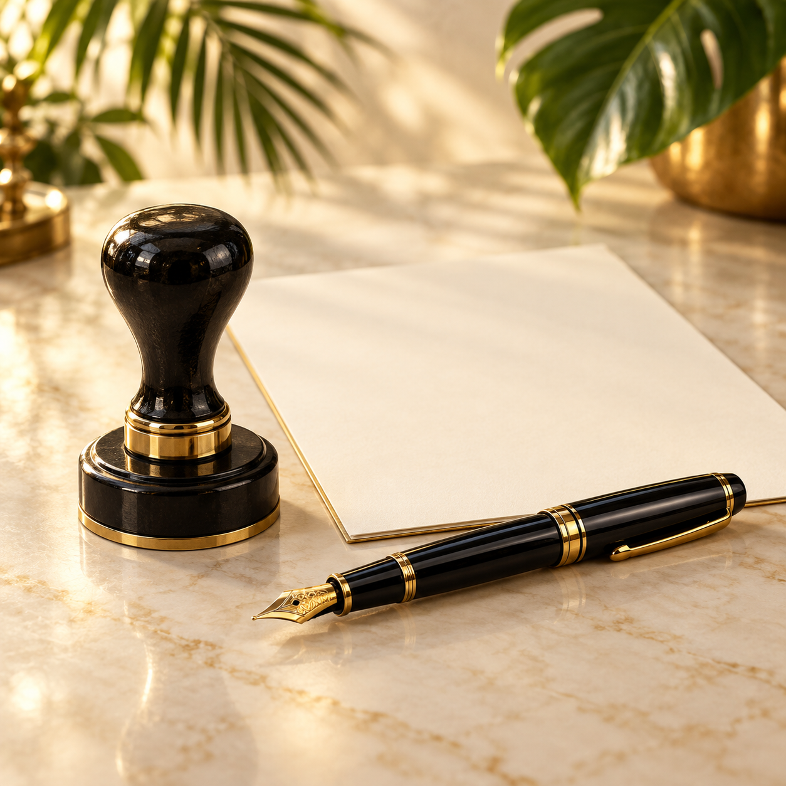
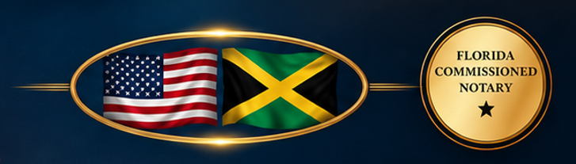

FLORIDA NOTARY SERVICES
Why Proper Notarization Matters — and How to Prepare for Your Appointment

Notarization can add confidence around important signatures and documents. Depending on the document, a notary may verify identity, witness a signature, or administer an oath or affirmation. Preparing properly can help the appointment go smoothly.
Before your appointment, confirm which document needs notarization and avoid signing it in advance if the signature must be witnessed. Bring acceptable current identification and the complete document. If other signers or witnesses are required, arrange for them ahead of time.

Waiting until the last minute can turn a simple appointment into unnecessary stress. Reviewing the requirements early gives you time to correct missing information and ask procedural questions before the appointment.
Au-Some Notarific Services LLC provides Florida notary services by appointment in Bay County and surrounding areas. Melicia can explain the appointment process, but does not provide legal advice or choose documents for clients.